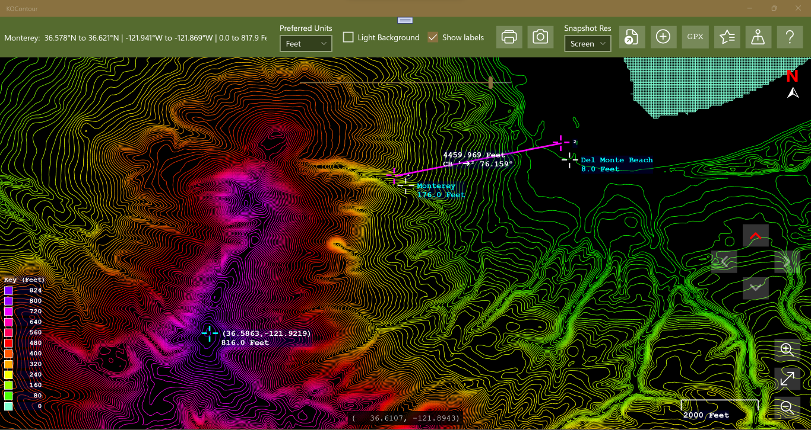

KOContour
The app can be installed from:
Requires Windows 10 (build 1809) or later, or Windows 11.
Contour map display for elevation data files, or elevation servers such as the Open Topo Data server.
Windows UWP Microsoft Store Free
KOContour reads in elevation data files from your computer and displays them as contour maps. A typical data file would look like this:
type latitude longitude altitude (ft) name desc T 53.231479474 -6.299506408 1672.9 Stillorgan Ireland T 53.231479474 -6.299119017 1678.8 T 53.231479474 -6.298731626 1687.9 T 53.231479474 -6.298344235 1698.1 T 53.231479474 -6.297956845 1704.0 T 53.231479474 -6.297569454 1708.2 T 53.231479474 -6.297182063 1709.2
The example above assumes tab-separated columns, which is recommended so that your description field can then use commas. In the sections below there are screenshots showing how the main features work.


There are a number of Digital Elevation Model (DEM) servers on the internet. KOContour can get data from the Open Topo Data server. This is the easiest way, but because the site limits you to 100 locations per call, at one-second intervals, and no more than 100,000 points per day, it can be a little slow depending on the grid resolution you choose from the dropdown below the dataset name. You can use a different server so long as the API format matches Open Topo. You can also follow the instructions for hosting the server yourself, but that is not necessary if you use the default of https://api.opentopodata.org/. When you click on the Create TSV from DEM server button you will see a file picker which lets you specify where to save the data — I recommend making a ContourMaps folder under your Pictures folder.

You will then see a progress information popup, which you can hide by clicking the Close and keep going button (click on the main toolbar button to see it again), and you can cancel the operation if, for example, you are warned that the dataset you chose does not have elevations for the points you requested. A good choice for North America and the UK seems to be the Mapzen dataset, but your mileage may vary. Once the download is complete you can close the progress box and then use the Load Data button to load the file you created.

For an individual the free/low cost option is likely more than adequate in the number of transactions available. See getting an Azure Maps subscription.

Once you have your key, click on the padlock button and paste your key into the dialog that pops up. Click Save to securely save the key in the local storage for your app. You are now ready to download data from the Microsoft Maps service. Click on Generate TSV from Bing Maps to create the data file and, as with the DEM server, the progress dialog will be displayed.
This is a bit trickier, but you can get more points if you need a high-resolution grid. If you have access to a data source and the technical wherewithal to do so, you can create your own file. I give mine the extension .tsv to distinguish them from ordinary text files, but that is up to you. The way to make data files with this method is to select the Create GPX file radio button and use the Generate GPX file button to create a GPX track file. The output is stored wherever you specify on your computer, then you feed it into gpsvisualizer.com/convert_input. Download the result file, rename it as <Placename>.txt or .tsv, then copy the file from Downloads to your data folder. This process looks a little complex at first, but you only need to do it once per new map area, and it is pretty simple once you have done it a few times.
Alternatively, here is a link to download Maui.tsv — a tab-separated data file for Maui, ready to use. As always, do a virus scan just as you would for any file you download.
To generate a GPX grid for Maui, go to your favourite map source, e.g. Google Maps, and enter Maui into the search box. Copy the coordinates of the centre of the area of interest — with Google Maps, right-click on the chosen spot and left-click on the coordinates that pop up, which will put them in the clipboard. In this example it will be something like 20.800841499225772, -156.32722033846065. Then click on the GPX button and the following dialog will appear.

Click on the field labelled Paste lat,lon here and paste the coordinates you just copied. This will fill the Latitude and Longitude fields — you can also fill in those fields individually if you prefer, and they will stay in sync. Fill in the other fields until they all show a green border indicating they are valid. The grid generated will be a 500×300 (lon×lat) grid, regardless of the extent you choose. When the Generate GPX File button becomes enabled, click on it and save the file as Maui.gpx.

Then go to gpsvisualizer.com/convert_input and add the file you created using the control marked 1 in the screenshot above. Set Add DEM elevation data to best available source using control 2, then click the green Convert button marked 3 and wait for the file to finish processing.

When the download link appears, click it and open the Downloads folder. Rename the file to something like Maui.tsv and copy or move it to your preferred folder under Pictures. You are now ready to load the data into KOContour.

Click the highlighted button, which will show a standard file picker letting you select one of the input files you created above. A contour map will be generated from the data and should look similar to the picture below.

Contour map of Maui generated from the downloaded elevation data
When you load a data file it is added to the Show Favourites list dialog, and you can double-click on entries there to load the data again. Entries are sorted with the most recently loaded at the top. Superimposed on the map you can see the zoom and pan controls, along with the height scale to the left and the distance scale in the lower right.

Click the highlighted button to show the Add or Edit a Place dialog. This lets you enter a place name, description, coordinates, and elevation for a new place, and add it to the list in the Show Places list dialog. If you double-click on a place in that list it will also invoke the Add or Edit a Place dialog. If the place does not have elevation data (shown as empty or −1000000) and it is within the currently loaded map data, the elevation field will be highlighted in purple with a suggested value filled in. Click Update Place / Add Place to save, or Cancel to exit without changes.
As an example, let's add Lahaina.

Use Google Maps as described above to get the coordinates for Lahaina and paste them into the dialog, then add the other details.

Lahaina will appear on the map and be highlighted as shown.

Try adding another place such as Waikapu. Leave the elevation unset and save the new place, then continue to the next section.

Click the highlighted button to show the Show Places list dialog. Places are maintained in alphabetical order. Double-clicking an entry launches the Add or Edit a Place dialog. If a place does not have elevation data and it is within the currently loaded map data, the elevation field will be highlighted in purple with a suggested value.

Try looking for Waikapu — you can jump to the W section by pressing the W key. Double-click on Waikapu; if the elevation was left as the default (−1000000 means undefined), it will suggest an elevation based on the nearest contour line and highlight as shown below.

Click Update Place to save the suggested elevation, which will then appear on the map under the place name.


To find the elevation of a point, click on the map at the desired location. A marker will appear showing the elevation along with the latitude and longitude. To remove it, click again in the centre of the crosshair.

To find the distance between two points, hold the Ctrl key and click on the map at the first location. A marker will appear. Keep holding Ctrl and click the second point. A line will be drawn between the points showing the distance and compass bearing. To remove the measurement tool, click again in the centre of either crosshair.

Click the highlighted button to show the Show Favourites list dialog. The list is maintained in last-access order, most recent first. Double-click an entry to load that data file. If the file no longer exists you will be asked if you would like to remove it from the list.

The Light Theme checkbox switches to a light background, which is sometimes better for printing. The Load at startup checkbox causes the app to automatically load the last successfully loaded data file at launch, if it still exists. Both of these settings are persisted across launches. The Show places option is not persisted.
Everything else is easy to figure out from the tooltips and prompts — have fun exploring!
The app can be installed from:
Requires Windows 10 (build 1809) or later, or Windows 11.
KOContour is free software.
← Back to KLO Software